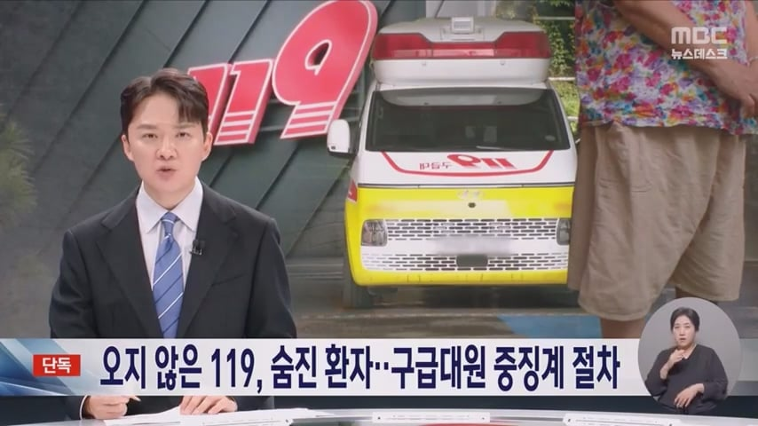
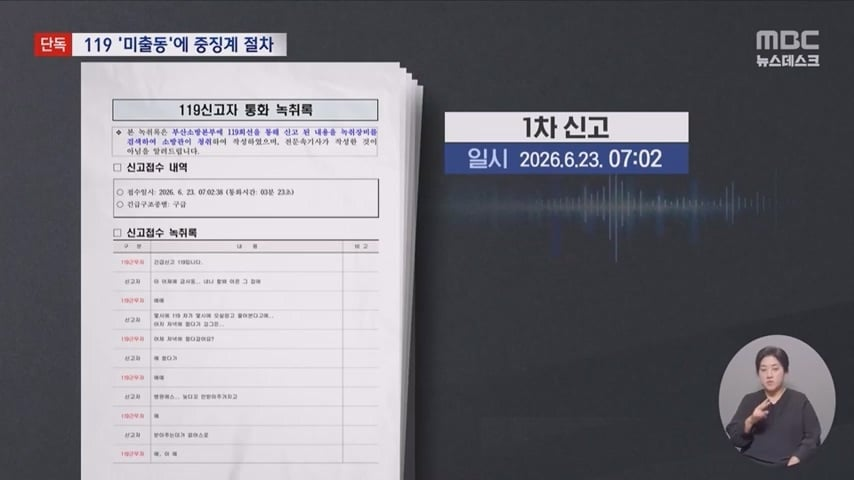
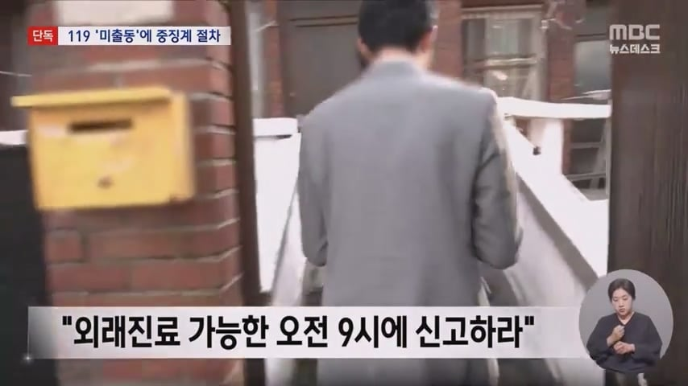
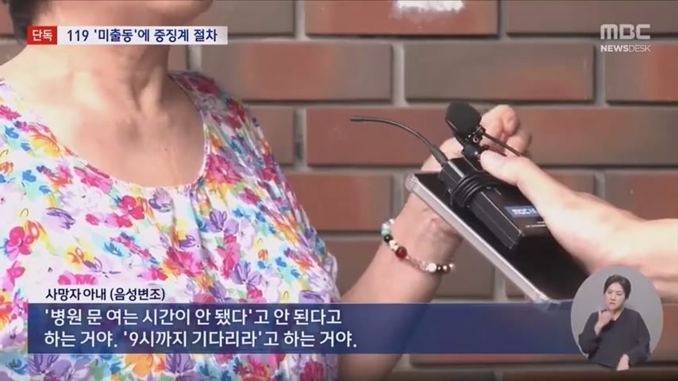
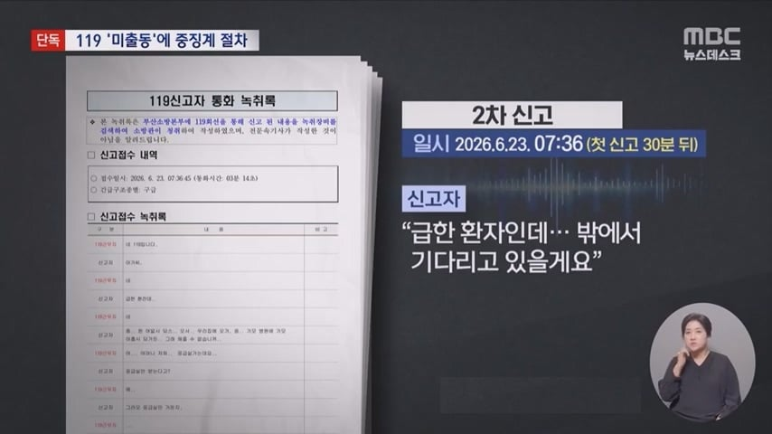
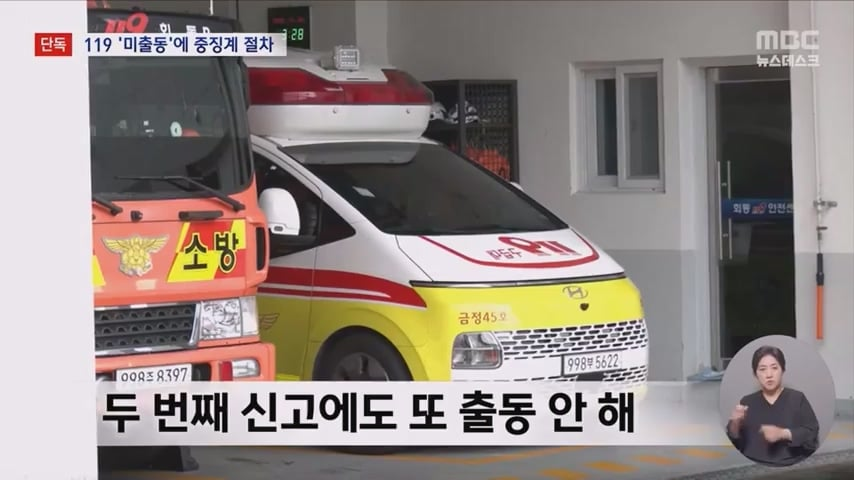
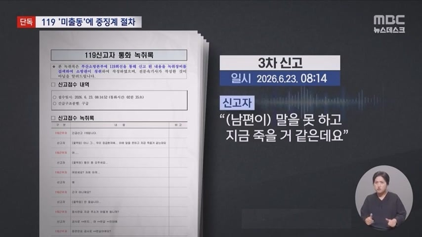
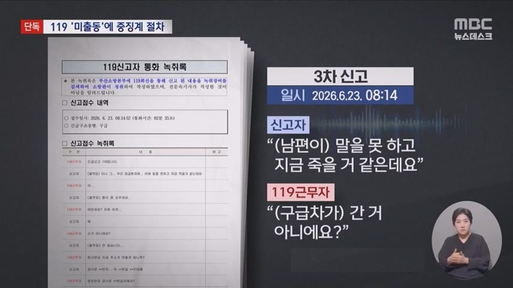
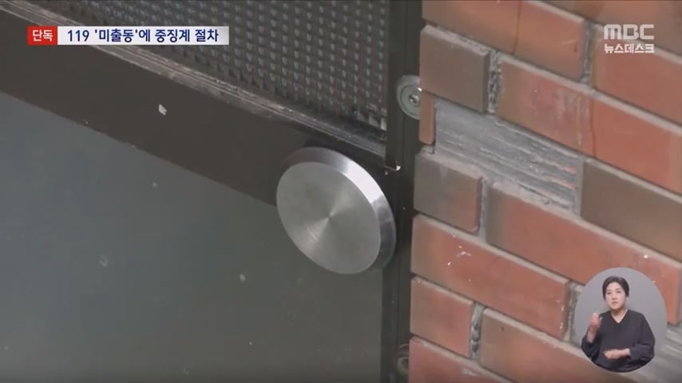
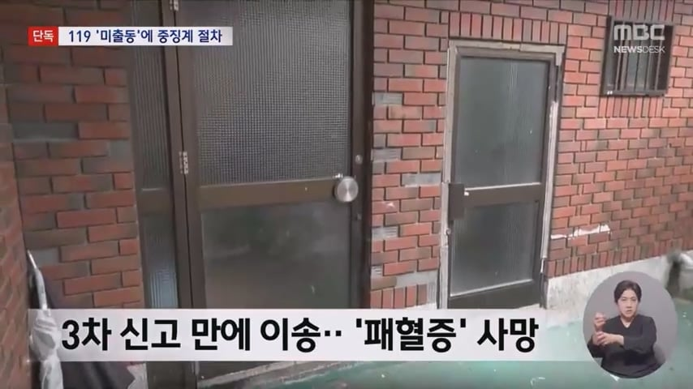
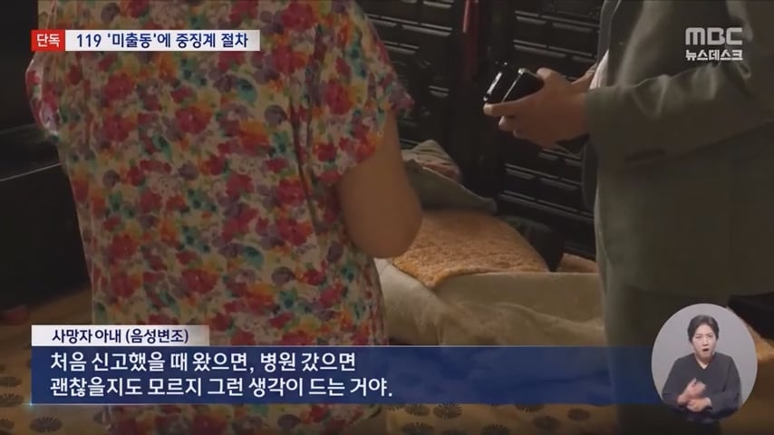
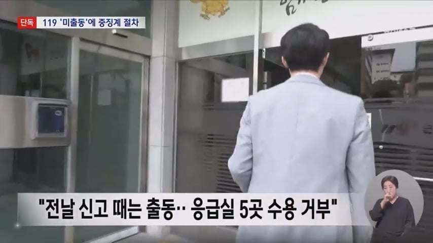
이들은 전날 오후에도 같은 신고를 받고 출동했지만 근처 응급실 5곳이 수용을 거부하고 장거리 이송은 보호자가 원치 않아 외래 진료를 안내했다고 설명합니다.
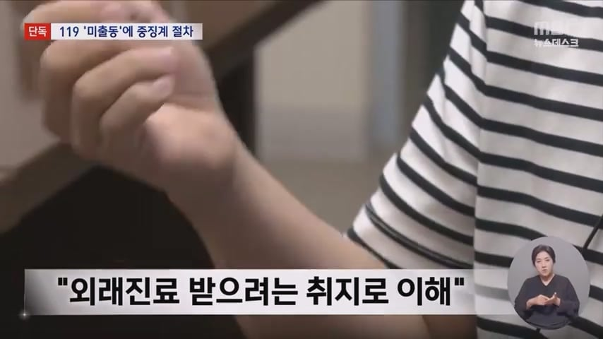
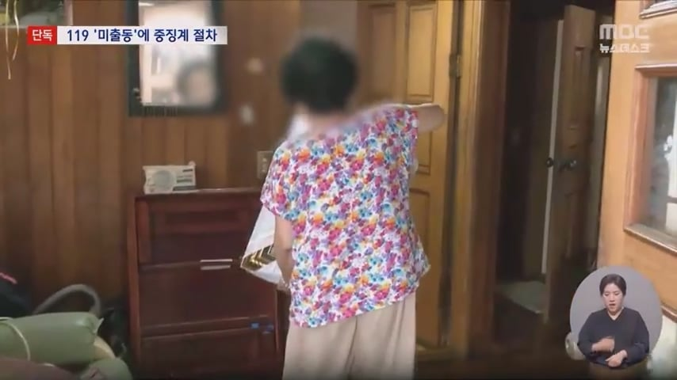
3차 신고 만에야 구급대원들이 출동했지만, 체온이 34도까지 떨어지고 의식을 잃은 남편은 병원 이송 2시간 뒤 패혈증으로 숨졌습니다.
소방은 현장에 출동하지 않은 건 '직무태만'에 해당한다며 구급대원 2명에 대해 중징계 처분 절차를 밟고 있습니다.
살인죄니깐 감방에가야지